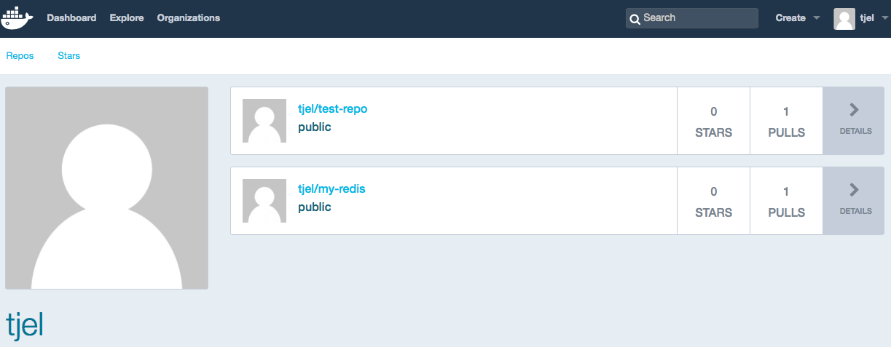
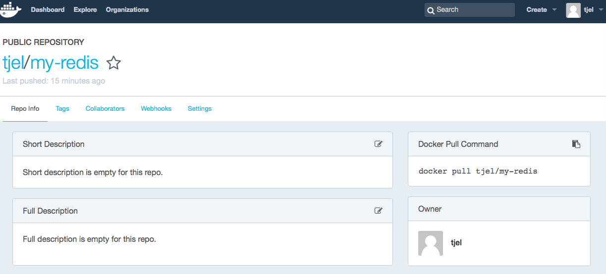

## Srodowiska i narzedzia wytwarzania oprogramowania - wyklad 6 <!--<img src="./Container-Devops-Pipeline.png" width="800">--> <!--http://developers.redhat.com/blog/2016/09/14/microservices-cicd-pipelines-in-openshift/--> <img src="./Docker-logo.png" width="400"> --- #### Izolacja aplikacji: control groups (cgroups) - any packages or libraries that the task might depend on (a specific version of Python, a working C++ compiler, and so on) must be already present on the host operating system --- #### Izolacja aplikacji: Linux Containers (LXC) - Linux Containers (LXC) is an operating system-level isolation method for running multiple isolated Linux systems (containers) on a single control host (LXC host) - under the hood of Linux kernel (> 2.6.24) since 2007: namespaces, control groups (cgroups), chroot,... - 'container = self-contained running instance that is separate from the host OS, but which can dynamically share resources' - no CPU or hardware virtualization - much lower CPU overhead - much faster file access - sometimes hard to configure networking - tricky to run completely different distro-based containers - for simple networks bridge-mode interface is enough - containers managment/engines: Docker, LXD, rkt,... --- #### Docker = 'a container platform making use of LXC containers' <!--<img src="./Docker-scheme.png" width="160">--> <!--<img src="./Docker-logo.png" width="200">--> Advantages of Docker: - The application and all of its dependencies are packaged within the container and deployed atop of host operating system - More lightweight/resource-friendly that deploying an entire VM - More portable than VM; versioning, and logging/monitoring are easy But: Containers are more dependent on the host operating system <!-- UWAGA: jadro hosta musi pasowac do tego, jakie zawiera gosc--> --- #### Docker - instalacja (Ubuntu 16.04) - sprawdzenie wersji jadra > 3.10, `uname -r` - dodatkowe pakiety ```bash sudo apt-get update sudo apt-get install linux-image-extra-$(uname -r) linux-image-extra-virtual ``` - dodanie klucza i repozytorium Dockera ```bash sudo apt-key adv \ --keyserver hkp://p80.pool.sks-keyservers.net:80 \ --recv-keys 58118E89F3A912897C070ADBF76221572C52609D sudo apt-add-repository \ 'deb https://apt.dockerproject.org/repo ubuntu-xenial main' ``` - wskazanie repozytorium z ktorego pobieramy Dockera ```bash sudo apt-get update apt-cache policy docker-engine > > docker-engine: > Installed: (none) > Candidate: 1.11.1-0~xenial > Version table: > 1.12.3-0~xenial 500 > 500 https://apt.dockerproject.org/repo ubuntu-xenial/main amd64 Packages > ... ``` --- #### Docker - instalacja (Ubuntu 16.04) ```bash sudo apt-get install -y docker-engine ``` - status uslugi ```bash sudo systemctl status docker > > docker.service - Docker Application Container Engine > Loaded: loaded (/lib/systemd/system/docker.service; enabled; \ > vendor preset: enabled) > Active: active (running) since Sun 2016-05-01 06:53:52 CDT; \ > 1 weeks 3 days ago > Docs: https://docs.docker.com > Main PID: 749 (docker) ``` - prawa dostepu ```bash > docker: Cannot connect to the Docker daemon. Is the docker daemon running \ > on this host?. > See 'docker run --help'. ``` - dostep bez uzycia `sudo` ```bash sudo usermod -aG docker ($(whoami)|<username>) sudo systemctl restart docker ``` --- #### Docker - linia polecen - skladnia ```bash docker [option] [image] [command] [arguments] ``` - dostepne opcje ```bash docker > > attach Attach to a running container > build Build an image from a Dockerfile > commit Create a new image from a container's changes > cp Copy files/folders between a container and the local filesystem > create Create a new container > diff Inspect changes on a container's filesystem > events Get real time events from the server > exec Run a command in a running container > export Export a container's filesystem as a tar archive > history Show the history of an image > images List images > import Import the contents from a tarball to create a filesystem image > ... ``` ```bash docker <docker-subcommand> --help ``` --- #### Obrazy Dockera - Repozytoria obrazow Dockera - [Docker Hub](https://hub.docker.com), [Docker Store](https://store.docker.com) - [Quay](https://quay.io), [Amazon EC2 Container Registry](https://aws.amazon.com/ecr/), [Google Container Registry](https://cloud.google.com/container-registry/) - przeszukiwanie repozytorium ```bash docker search ubuntu > > NAME DESCRIPTION STARS OFFICIAL AUTOMATED > ubuntu Ubuntu is a Debian-based Linux operating s... 3808 [OK] > ubuntu-upstart Upstart is an event-based replacement for ... 61 [OK] > torusware/speedus-ubuntu Always updated official Ubuntu docker imag... 25 [OK] > ... ``` ```bash docker pull ubuntu ``` --- #### Hello World ```bash docker run hello-world > Unable to find image 'hello-world:latest' locally > latest: Pulling from library/hello-world > c04b14da8d14: Pull complete > Digest: sha256:0256e8a36e2070f7bf2d0b0763dbabdd67798512411de4cdcf9431a1feb60fd9 > Status: Downloaded newer image for hello-world:latest > Hello from Docker! > This message shows that your installation appears to be working correctly. > > To generate this message, Docker took the following steps: > 1. The Docker Engine CLI client contacted the Docker Engine daemon. > 2. The Docker Engine daemon pulled the "hello-world" image from the Docker Hub. > 3. The Docker Engine daemon created a new container from that image which runs > the executable that produces the output you are currently reading. > 4. The Docker daemon streamed that output to the Docker client, > which sent it to your terminal. > > To try something more ambitious, you can run an Ubuntu container with: > $ docker run -it ubuntu bash > > Share images, automate workflows, and more with a free Docker Hub account: > https://hub.docker.com > > For more examples and ideas, visit: > https://docs.docker.com/engine/userguide/ ``` --- #### Uruchamianie obrazu - utworzenie nowego kontenera na bazie `ubuntu` ```bash docker run ubuntu > Unable to find image 'ubuntu:latest' locally > latest: Pulling from library/ubuntu ... ``` ```bash docker images > > REPOSITORY TAG IMAGE ID CREATED SIZE > ubuntu latest e4415b714b62 7 days ago 128.1 MB > hello-world latest c54a2cc56cbb 2 weeks ago 1.848 kB ``` - wirtualy interfejs sieciowy ```bash ifconfig docker0 Link encap:Ethernet HWaddr 02:42:17:45:e8:ad inet addr:172.17.0.1 Bcast:0.0.0.0 Mask:255.255.0.0 inet6 addr: fe80::42:17ff:fe45:e8ad/64 Scope:Link UP BROADCAST MULTICAST MTU:1500 Metric:1 RX packets:3 errors:0 dropped:0 overruns:0 frame:0 TX packets:1 errors:0 dropped:0 overruns:0 carrier:0 collisions:0 txqueuelen:0 RX bytes:228 (228.0 B) TX bytes:90 (90.0 B) ``` --- #### Zarzadzanie kontenerami - utworzenie nowego kontenera ```bash docker run -it ubuntu root@f4c9e2839826:/# root@f4c9e2839826:/# apt-get update root@f4c9e2839826:/# apt-get install -y nodejs root@f4c9e2839826:/# exit ``` - zniszczenie kontenera ```bash docker rm <container-id> ``` - zapisanie stanu kontenera do lokalnego repozytorium ```bash docker commit -m "Comment" -a "Author" <container-id> <repository>/<image_name> docker commit -m "added node.js" -a "tjel" f4c9e2839826 tjel/ubuntu-nodejs > sha256:a32fc91fc9cde84d251ed6ae63c5e11c28c8368b095415835513a1e994e148bb ``` ```bash docker images > > REPOSITORY TAG IMAGE ID CREATED SIZE > tjel/ubuntu-nodejs latest a32fc91fc9cd 26 seconds ago 216.4 MB ``` --- #### Zarzadzanie kontenerami - lista kontenerow ```bash docker ps [-la] > > CONTAINER ID IMAGE COMMAND CREATED STATUS PORTS NAMES > f4c9e2839826 ubuntu "/bin/bash" 4 minutes ago Exited (0) 2 minutes ago ``` - zatrzymanie kontenera ```bash docker stop <container-id> ``` - ponowne uruchomienie kontenera ```bash docker start -ai <container-id> ``` - zapisanie obrazu do zdalnego repozytorium Docker Hub ```bash docker login -u <docker-registry-username> ``` ```bash docker push <docker-registry-username>/<docker-image-name> > > The push refers to a repository [docker.io/finid/ubuntu-nodejs] > e3fbbfb44187: Pushed ... ``` --- #### Prosty przyklad - konteneryzacja Redis ```bash docker run --name my-redis -it ubuntu:latest bash root@ed35631e96f9:/# apt-get update root@ed35631e96f9:/# apt-get install wget root@ed35631e96f9:/# apt-get install build-essential tcl8.5 root@ed35631e96f9:/# wget http://download.redis.io/releases/redis-stable.tar.gz root@ed35631e96f9:/# tar xzf redis-stable.tar.gz root@ed35631e96f9:/# cd redis-stable && make && make install root@ed35631e96f9:/# ./utils/install_server.sh root@ed35631e96f9:/# service redis_6379 start root@ed35631e96f9:/# exit docker ps -a docker commit -m "Added Redis" -a "tjel" my-redis tjel/my-redis:latest ``` --- #### Dockerfile - konteneryzacja Redis ```bash cat ~/docker/test-redis/Dockerfile > > FROM ubuntu:latest > RUN apt-get update > RUN apt-get install -y wget > RUN apt-get install -y build-essential tcl8.5 > RUN wget http://download.redis.io/releases/redis-stable.tar.gz > RUN tar xzf redis-stable.tar.gz > RUN cd redis-stable && make && make install > RUN ./redis-stable/utils/install_server.sh > EXPOSE 6379 > ENTRYPOINT ["redis-server"] ``` ```bash cd ~/docker/test-redis docker build -t redis . docker run -d -p 6379:6379 redis ``` --- #### Architektura Dockera <img src="./docker-architecture.png" width="750"> --- #### Docker Hub - tworzenie konta <img src="./docker-hub-2.png" width="250"> --- #### Docker Hub - tworzenie repozytorium --- #### Docker Hub - tworzenie repozytorium <img src="./docker-hub-5.png" width="800"> --- #### Etykietowanie obrazu ```bash docker images > > REPOSITORY TAG IMAGE ID CREATED SIZE > docker-whale latest 7d9495d03763 38 minutes ago 273.7 MB ``` ```bash Notice that currently, the `REPOSITORY` shows the repo name `docker-whale` but not the namespace. You need to include the `namespace` for Docker Hub to associate it with your account. The `namespace` is the same as your Docker Hub account name. You need to rename the image to `YOUR_DOCKERHUB_NAME/docker-whale`. ``` ```bash docker tag 7d9495d03763 tjel/docker-whale:latest ``` ```bash docker images > > REPOSITORY TAG IMAGE ID CREATED SIZE > tjel/docker-whale latest 7d9495d03763 5 minutes ago 273.7 MB > docker-whale latest 7d9495d03763 2 hours ago 273.7 MB ``` --- #### Przesylanie i pobieranie obrazu z Docker Hub ```bash docker push tjel/docker-whale > The push refers to a repository [tjel/docker-whale] (len: 1) > 7d9495d03763: Image already exists > c81071adeeb5: Image successfully pushed > eb06e47a01d2: Image successfully pushed > ... > Digest: sha256:ad89e88beb7dc73bf55d456e2c600e0a39dd6c9500d7cd8d1025626c4b985011 ``` ```bash docker rmi -f 7d9495d03763 docker rmi -f docker-whale ``` ```bash docker run tjel/docker-whale > > Unable to find image 'tjel/docker-whale:latest' locally > latest: Pulling from tjel/docker-whale > eb06e47a01d2: Pull complete > c81071adeeb5: Pull complete > 7d9495d03763: Already exists > ... ``` --- #### Docker Hub - tworzenie repozytorium   --- #### Status kontenera ```bash docker run -h CONTAINER -it debian /bin/bash > Unable to find image 'debian:latest' locally > latest: Pulling from library/debian > 386a066cd84a: Pull complete > Digest: sha256:c1ce85a0f7126a3b5cbf7c57676b01b37c755b9ff9e2f39ca88181c02b985724 > Status: Downloaded newer image for debian:latest root@CONTAINER:/# ``` ```bash docker ps > CONTAINER ID IMAGE COMMAND CREATED STATUS PORTS NAMES > 9ff1e5f1d68c debian "/bin/bash" 56 seconds ago Up 55 seconds goofy_gates ``` ```bash docker inspect goofy_gates > [ > { > "Id": "9ff1e5f1d68cfc472d3ec67fda04111de66db7201ebc1274f0c5b31a02ad7e3c", > "Created": "2016-11-28T01:06:56.150266104Z", > "Path": "/bin/bash", > "Args": [], > "State": { > "Status": "running", > "Running": true, > ... ``` --- #### Ustawienia sieciowe kontenera ```bash docker inspect goofy_gates | grep IPAddress > "SecondaryIPAddresses": null, > "IPAddress": "172.17.0.2", > "IPAddress": "172.17.0.2", ``` - polaczenie pomiedzy dwoma kontenerami ```bash docker run --name RedisDB -d redis ``` ```bash docker run --rm -it --link RedisDB:RedisClient redis /bin/bash root@fb9976c9aea9:/data# redis-cli -h RedisClient -p 6379 RedisClient:6379> ping PONG RedisClient:6379> set "abc" 123 OK RedisClient:6379> get "abc" "123" RedisClient:6379> exit root@fb9976c9aea9:/data# exit exit ```